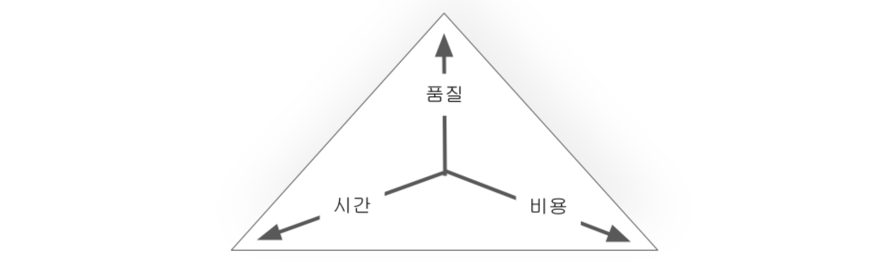

어느 프로젝트나 ‘품질’, ‘비용’, ‘시간'라는 요소가 프로젝트 성공에 영향을 미친다. 이러한 요소들간의 관계를 보여주는 것이 스코프 삼각형(Scope Triangle)이다. 스코프 삼각형은 프로젝트의 성공 요인들에 대한 트레이드 오프 관계가 존재함을 나타낸다.

스코프 삼각형에서 시간은 프로젝트의 가용 시간이고, 비용은 프로젝트에서 사용 가능한 자원의 양을 나타낸다. 품질은 프로젝트가 성공하기 위해 달성해야 하는 목표에 해당한다. 프로젝트를 성공적으로 수행하기 위해 세 요소는 적절히 조정이 될 필요가 있다. 어느 요소 지나치게 축소되거나 확대되면 스코프 크리프(scope creep) 가 발생한다. 스코프 크리프 는 범위(scope)가 슬금 슬금(creep) 확대 된다는 의미로, 추가적인 자원이나 일정 조정 없이 일이 추가되면서 프로젝트 범위가 확대되는 문제를 의미한다.
스코프 크리프의 대표적인 예로 품질을 높인다는 목적으로 많은 기능을 추가하는 것이다. 새로운 기능 추가가 많아진다는 것은 프로젝트의 목표나 기능이 정확히 정의되지 않았음을 의미한다. 또 다른 예로 골드 플레이팅(gold plating) 현상이다. 골드 플레이팅은 금박을 입힌다는 뜻으로, 고객의 요구수준을 넘어서 과도하게 프로젝트 품질을 높이려는 시도이다.
스코프 크리프에 대한 대응 방안은 세 가지 요소들의 강조점을 옮겨가며 절충하는 결정을 내리는 것이다.
-
- 품질 낮춤 : 핵심 기능 외의 기능은 버림
-
- 비용 투입 : 추가적인 비용(인력 등)을 투입
-
- 시간 지연 : 프로젝트를 지연 시킴
스코프 크리프로 인해 기능이 계속 늘어나 시간이 부족한 경우는 품질을 보장할 수 있는 핵심 기능만 남기고 불필요한 기능은 다음 릴리즈에 포함하는 것이다. 그래야 프로젝트를 정해진 시간 안에 출시할 수 있다. 만약 추가된 기능이 품질에 결정적인 영향을 미쳐서 포기할 수 없는 상황이라면 추가적인 인력을 투입하고 프로젝트 기간을 연장하는 방식이 필요하다.